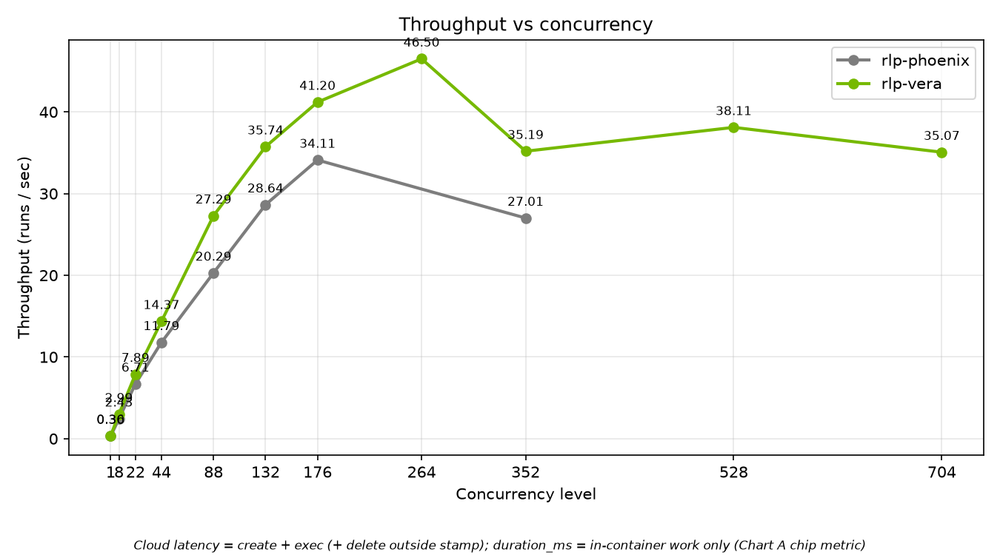
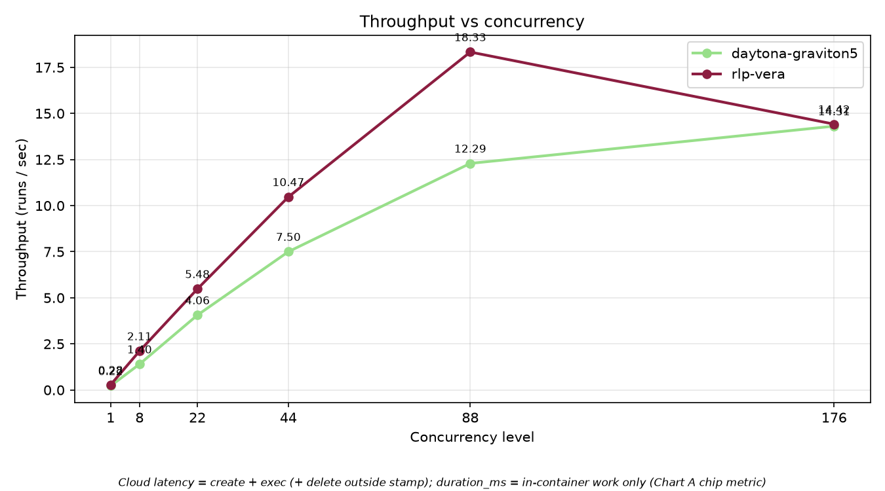
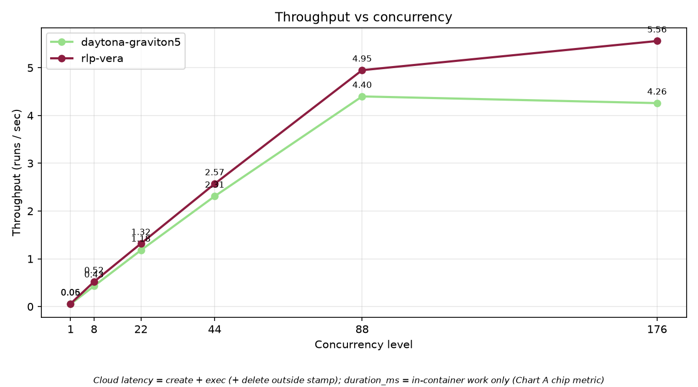
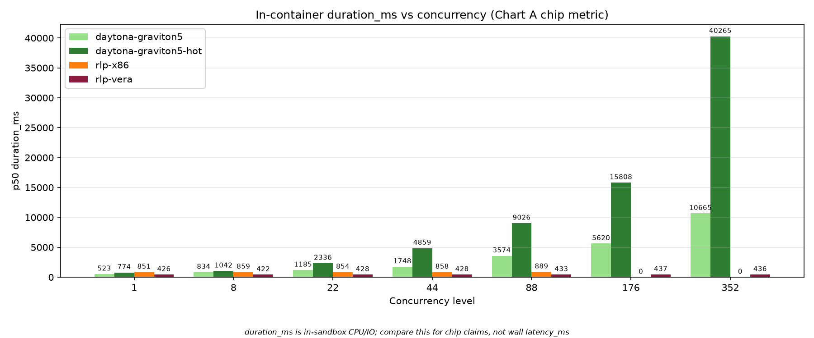
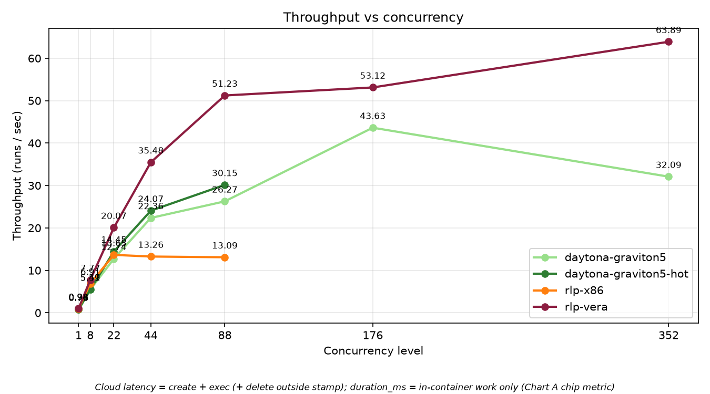
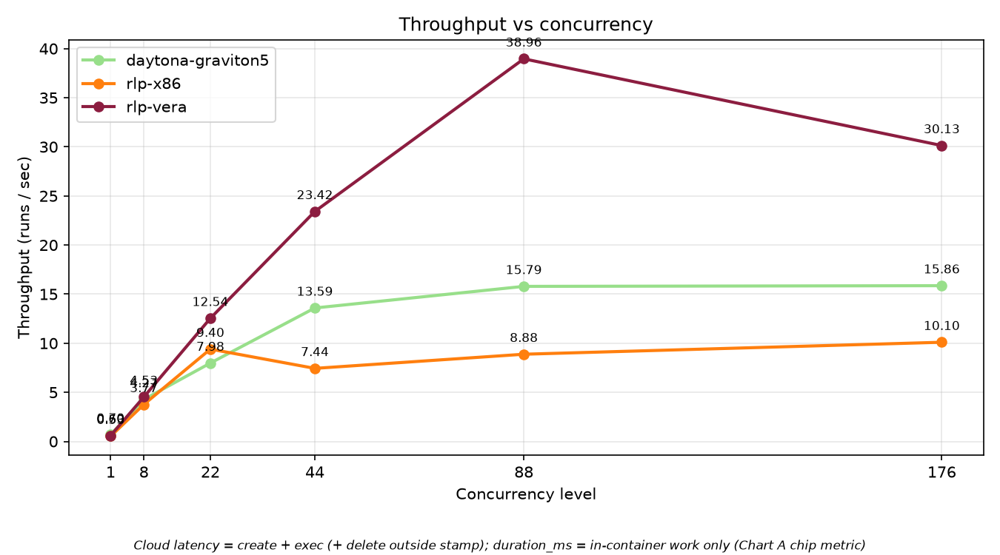
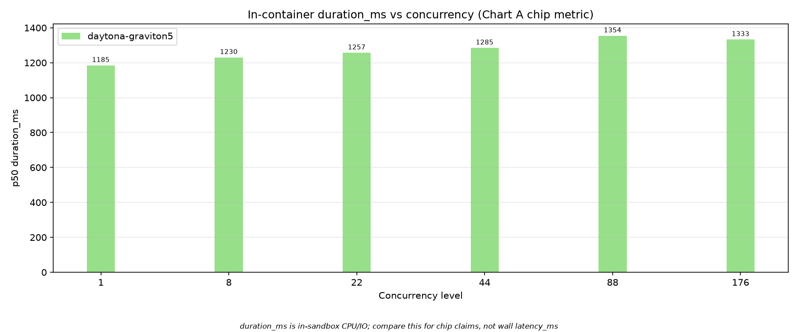

2.2×
agent throughput at 88: Vera 24.7/s vs G5 11.1/s
Customer meaning: more coding-agent jobs complete in the same time without a large per-job slowdown.
Benchmark team readout · August 2026
A practical readout of six deterministic workloads across Vera and Daytona’s Graviton5 path: agent work, analytics, disk, evals, media, and RL.
Read this as a capacity-planning story: how quickly a job runs, how many jobs finish together, and where high concurrency stops helping.
Executive summary
2.2×
agent throughput at 88: Vera 24.7/s vs G5 11.1/s
Customer meaning: more coding-agent jobs complete in the same time without a large per-job slowdown.
6×
disk throughput at 88: Vera 34.2/s vs G5 5.4/s
Customer meaning: file-heavy sandbox jobs remain responsive while tenants are packed together.
176 ≠ better
several ladders create longer queues or show failures at the top level
Recommendation: sell proven operating points, not maximum theoretical concurrency.
Vera has its clearest advantage when many short, independent jobs run at once: agent, disk, and RL workloads hold work time flatter than the comparison path.
These are soft product comparisons: Vera uses a dedicated RLP cell and Hub image; Graviton5 uses Daytona linux VMs in us-east-1-arm. Results describe these tested configurations, not every customer workload.
1 · Agent work

24.7/s
Vera at 88 concurrent agent sandboxes
Vera completes roughly 2.2× as many jobs as G5 at the same operating point.
At 88, Vera’s median in-sandbox job takes ~2.8 s versus ~7.1 s on G5. A team can run more agents without each agent feeling slow.
repo-agent-v2 does search, AST work, edits, pytest, and SQL in a 1 GiB isolated workspace. Each sandbox runs 8 episodes; create time is kept out of duration_ms.
2 · Data and media work

Analytics Vera is ~18% faster idle and ~25% faster at 88. Recommend 88 × 4 GiB; 176 adds create/scheduling queue time rather than more throughput.

Media Vera completes each encode about 15% faster. Recommend 88, not 176: the Vera 176 run had 52 boot/create failures, so its apparent 5.6/s is not a clean scale claim.
Analytics generates Parquet then performs a DuckDB scan/join/aggregate inside a 4 GiB sandbox. Media generates frames, H.264 encodes, and decode-verifies inside a 2 GiB sandbox. Longer media jobs naturally produce lower jobs/second; that is not a ladder failure.
3 · Disk and filesystem

34.2/s
Vera at 88; G5 cold is 5.4/s
For file-heavy jobs, this is the clearest evidence that tenant contention does not turn into slow work on Vera.
The disk test creates a fresh sandbox for every job. Vera’s per-job disk work stays ~430 ms, but queue/create tails pull throughput down after 88.
The probe writes, fsyncs, reads, and creates many small files. It intentionally uses one episode per sandbox, so it measures cold-create density plus filesystem behavior—not warm reuse.
4 · RL rollout work

45.3/s
Vera at 88 concurrent RL episodes
Vera keeps median episode work near 0.67 s across the ladder while completing ~3× Daytona x86 throughput.
For many independent rollout-like jobs, Vera is a strong fit when the goal is more completed work per unit of shared capacity.
Each 1-vCPU episode runs a local grid environment, NumPy mock policy, and trajectory buffer—no network, GPU, or inference server. Checksums validate identical seeded work.
5 · Terminal-style evals

Derived result At 88, Vera delivers 19.69 trials/s, about 1.9× the two G5 series at roughly 10/s.

Tradeoff At 88, the G5 paths have lower p50 in-sandbox trial time (~1.64 s vs Vera ~2.07 s). The deck therefore presents evals as an observed capacity tradeoff—not an unqualified chip-speed win.
This workload creates an isolated workspace, performs deterministic oracle terminal work, and verifies the result; it uses no LLM. The benchmark code and the raw JSONL output are the source because an evals/INSIGHTS.md brief is not present.
Decision guide
duration_ms measures work inside the sandbox; latency_ms also includes create/exec effects.../data/evals/.All comparisons are configuration-specific. Re-run the same workload, resource limits, and concurrency ladder before turning these observations into an SLA.